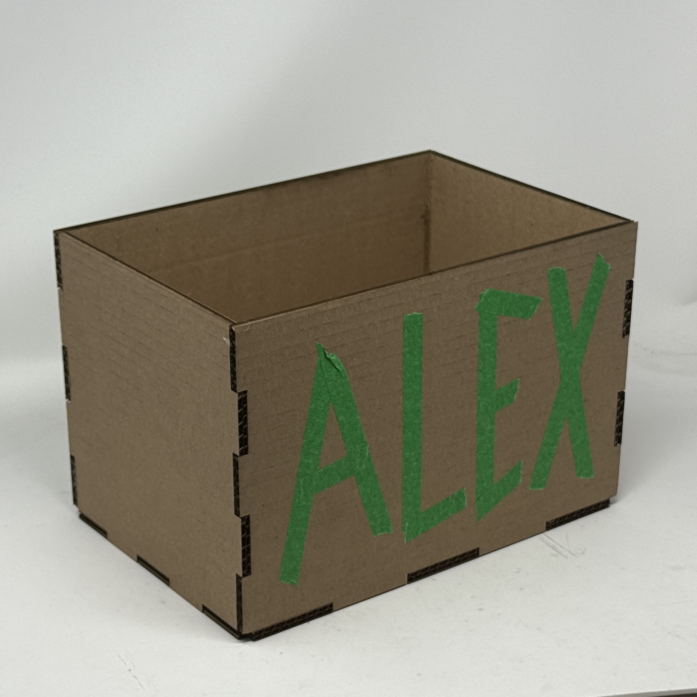
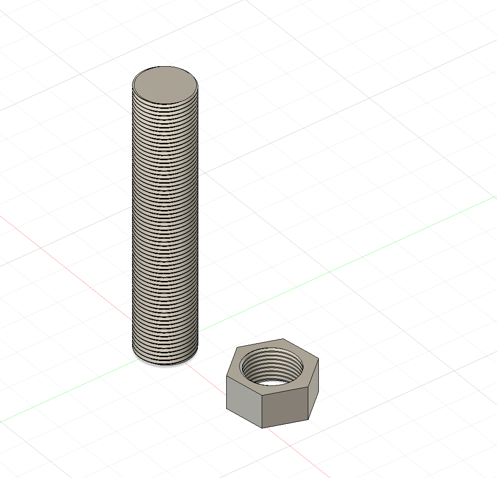
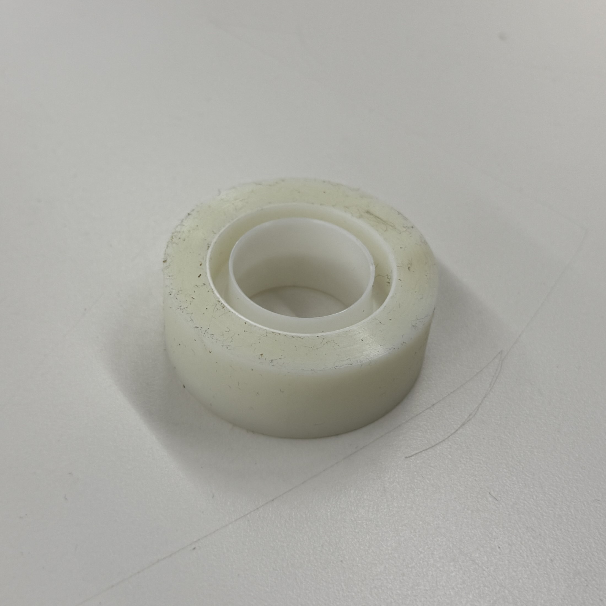
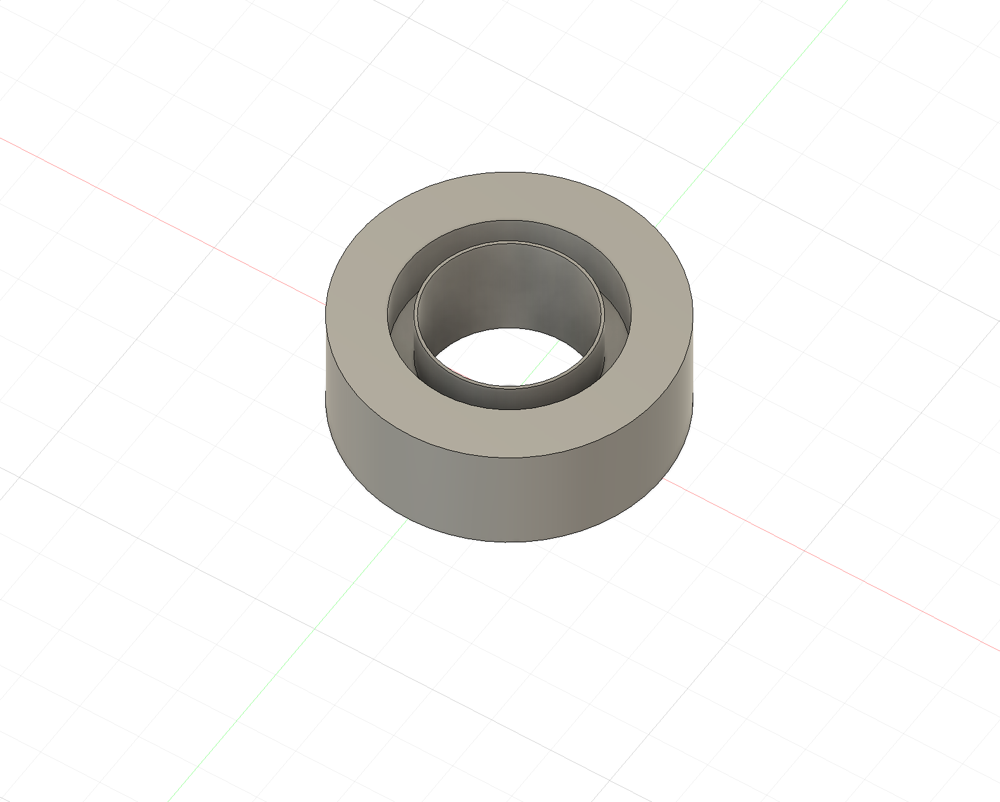
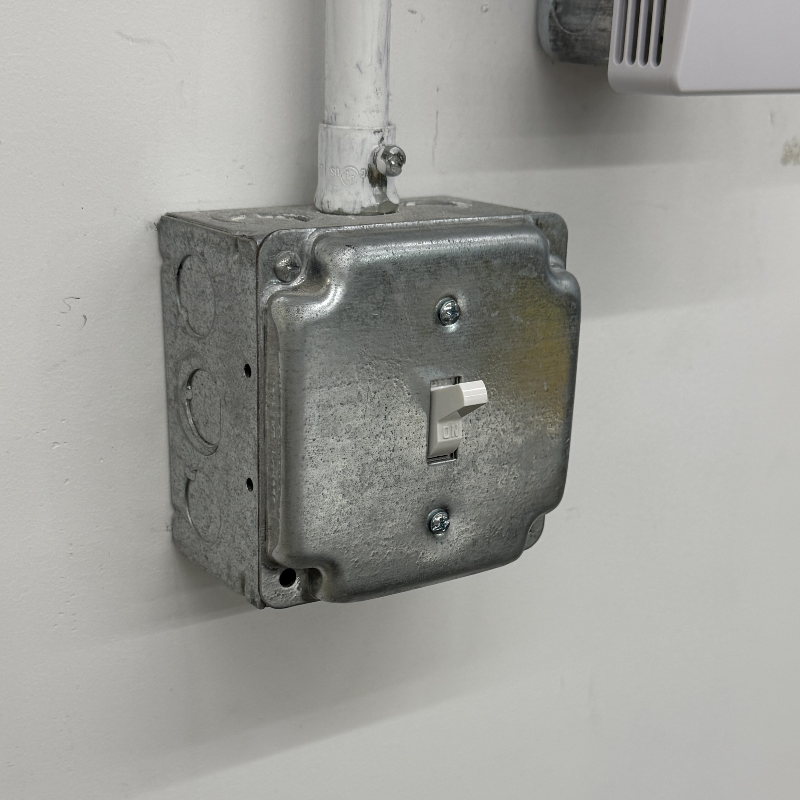
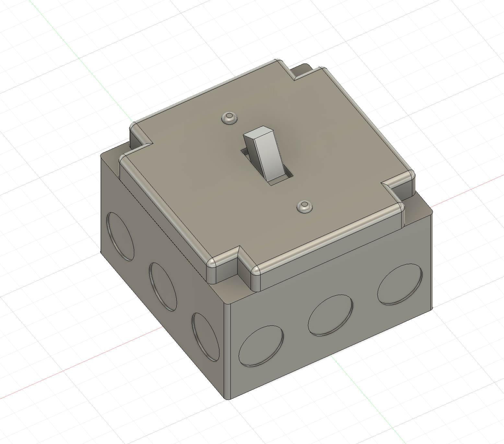

<div class="textcontainer">
<p class="margin"> </p>
<h3>Week 2: 2D Design & Cutting</h3>
<p class="margin"> </p>
<h4>Assignment 1: Make a Box</h4>
<br></br>
I designed a box so amazing, some may even consider it contemporary art. This box was made from 7mm Cardboard
and was designed in Fusion 360, a new software for me. I used the extrude and sketch tools to create the shapes
and the dimensions are 300mm x 200mm x 200mm. The open-top design is perfect for storing all of my components,
allowing me to store objects of all sizes, even really long dowels.
<br></br>

<p class="margin"> </p>
<h4>Assignment 2: Fusion 360 Tutorial</h4>
<br></br>
I designed a screw and nut in Fusion in order to explore modeling complementary parts.
<br></br>

<p class="margin"> </p>
<div class="flexrow">
<a id="btn" href="./screw.f3d" download>Download my Screw and Nut Design!
</a>
</div>
<p class="margin"> </p>
<h4>Assignment 3: Fusion Modeling</h4>
<br></br>
When deciding what to model, I thought long and hard about what would be the hardest object ever and landed on..... a role of tape.
My measurements were so detailed and enabled me to perfectly recreate the tape roll in Fusion. As my first time free-handing CAD
in Fusion, this remarkably complex model took me about 70 minutes to complete.
<br></br>


<br></br>
As a second model, I thought longer and harder until stumbling upon the idea of modeling a light switch. This model was much more
difficult than the tape roll since I used the fillet tool and had to model features on different axes and heights. With more
experience now, I am happy to report that this model took me no longer than 60 minutes.
<br></br>


</div>